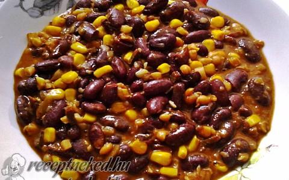

A chilis bab csodálatos vitatéma, még a pörköltnél is nagyobbakat lehet rajta veszekedni, ugyanis a félreértések és nézeteltérések itt nemzetközi szinten folynak, és világméretűek az összeveszések. Eredetéről két uralkodó elmélet létezik. Az egyik szerint amerikai ételről van szó, mexikói felhanggal.Ezt a mexikóiak nem fogadják el, és semmiféle rokonságot nem vállalnak a chili con carnéval. Van több olyan fogásuk is, amiben hús csilivel és esetleg babbal fő, de az egy egészen másféle, zsírosabb, súlyosabb étel. A másik elmélet texasi cowboyokat jelöl ki a fogás ősi kitalálóiként, ebben a verzióban viszont eredetileg egyáltalán nincs bab. Sőt, nem is feltétlenül darált hússal készül. Voltaképpen amolyan pörköltféleségről van szó: kockázott, zsíros-inas marhahús, amely sok csilivel, kevés vízzel vagy húslevessel, de lényegében saját levében, lassan párolva fő omlósra.
Attól, hogy nem tisztázott az eredete, Amerika egyik kiemelkedő fontosságú ételéről van szó. Létezik egy nemzetközi társaság, ami csak ezzel foglalkozik, versenyeket és fesztiválokat szervez köré, amelyek ugyanannyira szólnak a legjobb csili elkészítésének címéről, mint arról, ki tudja megenni a legerősebbre főzőtt húst anélkül, hogy tüzet hányna a kapszaicintől. A gasztronómiai újságírás külön kutatási területét képezi. Joe Cooper 1952-ben könyvet írt a témában Babbal vagy anélkül címmel, amelyben a csili életrajzát igyekezett összefoglalni. A végeredmény nála is egyértelműen a bab és paradicsom nélküli verzió, rengeteg csilivel, fokhagymával és más fűszerekkel. A továbbiakban én egy általam készitett mexikói chilis bab elkészitését és a hozzávalókat irom le a következő részben.
| Hozzávalók | Mennyiség |
|---|---|
| Mexikói chilis bab alap | 1 db |
| Csirkemell | 500 g |
| Bab | 240 g |
| Kukorica | 285 g |
| Kókuszdióolaj | 3 evőkanál |